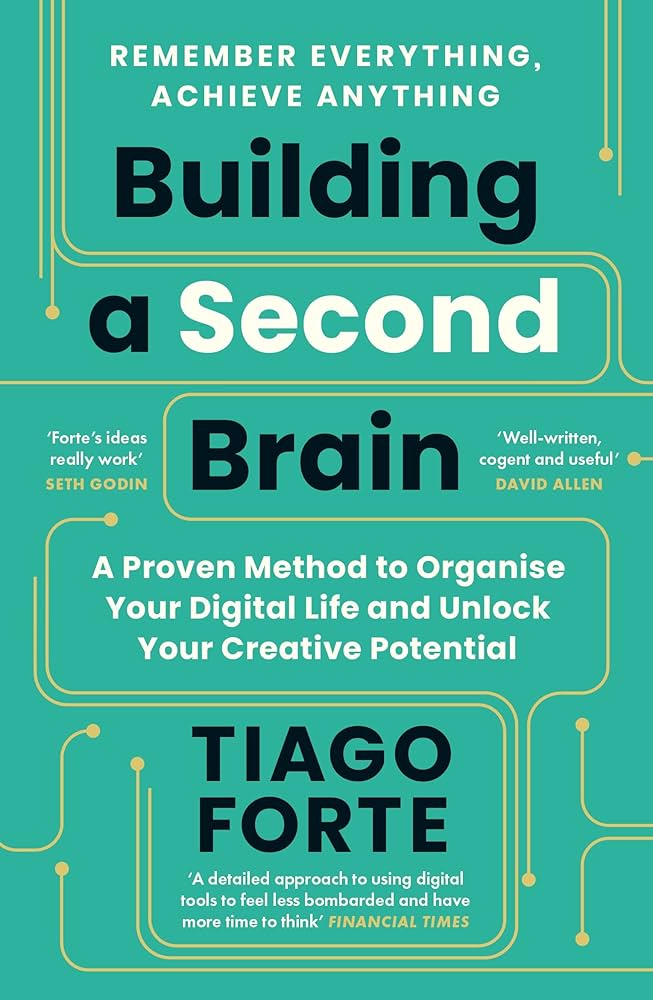

Building a Second Brain is Tiago Forte's guide to a personal knowledge management (PKM) system built on ordinary digital notes apps. The idea is that your biological brain is for having ideas, not storing them, so you give it an external partner that holds the things you read, hear and think.
The system rests on two frameworks. CODE (Capture, Organize, Distill, Express) describes the lifecycle of a piece of information. PARA (Projects, Areas, Resources, Archive) is the folder structure, arranged by how actionable something is rather than by topic. Around those sit a handful of habits: summarising notes in layers, working in small reusable chunks, and reviewing the system weekly.
It is part manifesto and part manual. The manifesto half argues that notes should serve finished work, not become a hobby of their own. The manual half is tool-agnostic, so you can follow it in Notion, Evernote, Apple Notes or Obsidian.
Keep what resonates
Save for actionability
Find the essence
Show your work
Forte opens with the case for why anyone needs this. We consume far more information than we can hold, yet most of it vanishes unused. He introduces the Second Brain as an external, digital place to keep what matters so you can draw on it later.
He also frames what the book will and will not promise: a practical method rather than a new app, built to be used with whichever notes tool you already have.
The origin story. Forte describes a long stretch of health problems that made it hard to rely on his memory and attention, and how that pushed him to build external systems for his notes. The method grew out of necessity before it became a course.
The chapter sets the tone for the whole book: this is meant to reduce stress, not add another system to feel guilty about.
A definition and a pitch. A Second Brain is a personal, digital collection of the ideas and information that matter to you, organised so you can find and use them. Forte contrasts it with passively saving bookmarks or letting notes pile up unread.
He lists what it can do for you: hold ideas safely, let you connect material from different places, and support finished projects. It is also where he introduces personal knowledge management as the wider field this sits in.
The overview chapter that introduces CODE: Capture, Organize, Distill, Express. Information moves from the world into your system, gets filed, is refined into its essence, and finally comes out as something you share or use.
Forte presents it as a loop that gets more valuable the more you run it, and as a way to stay out of two common traps: saving everything and never touching it, or never saving anything and relying on memory.
The first question is what is worth saving. Forte's answer is a deliberately loose filter: keep what resonates, meaning what surprises you, moves you, or feels useful. He pushes back on trying to capture everything, and frames you as a curator rather than a collector.
The chapter also covers practical capture habits, such as using a small number of capture tools and saving with your future self in mind.
This is where PARA arrives. Instead of organising by subject like a library, you organise by how soon you will act on something: Projects (short-term efforts with a goal), Areas (ongoing responsibilities), Resources (topics of interest) and Archive (things that are no longer active).
The structure is designed to be shallow and to mirror the way you actually work, so that the question at filing time is only "which project or area does this help?"
Forte's signature technique, Progressive Summarization. Rather than summarising everything up front, you add layers each time you revisit a note: first the saved passage, then bold on the key sentences, then highlight on the best of those, then a short summary in your own words.
The logic is that effort goes only into notes that keep getting reopened, and the layers make a note skimmable in seconds. The book describes a further step of remixing the distilled material into new work; check your copy for exactly how many layers it names.
The payoff stage. Forte argues the system exists to produce things, and introduces Intermediate Packets: small, reusable units of work such as an outline, a research summary or a slide that you can assemble into larger pieces.
He also encourages sharing work while it is still in progress, rather than waiting until it is polished, so that feedback arrives early and the packets keep circulating.
From system to practice. The chapter discusses how creative work alternates between diverging (gathering and exploring) and converging (narrowing and deciding), and how a Second Brain supports both. A key image is the archipelago of ideas: before drafting, you collect your relevant notes into a loose cluster of islands and look for how they connect.
A related habit is the Hemingway bridge: end a work session by leaving yourself a short note on where to pick up.
The maintenance chapter. A Second Brain decays without upkeep, so Forte describes light recurring habits: checklists for starting and finishing projects, a regular review of your inbox and project list, and periodic broader check-ins on whether what you are working on still matches what you want.
He leans toward organising just in time, when a project actually needs the material, rather than organising just in case.
The widest-angle chapter. Forte steps back from tools to the mindset he hopes goes with them: moving from a feeling of scarcity (fear of missing the right idea) toward abundance (confidence that your collected material and your own voice are enough to start with).
He ties the method to creative self-expression, arguing that steadily collecting, connecting and sharing is how people find what they have to say. I am less sure of this chapter's internal order than the others, so treat the detail as approximate.
Search results for the book's structure list a closing section after chapter 10, but I could not confirm its title or contents. Based on the book's themes, expect a wrap-up that encourages starting small and letting the habit compound. Treat this card as a placeholder and read the real conclusion in your copy.
Two frameworks do most of the work. CODE says what to do with information over time; PARA says where to keep it. Below, each gets a per-element breakdown, then a side-by-side comparison, then two things to try. The sample situations are my own illustrations in the spirit of the book, not quotations from it.
CODE is a pipeline for anything you read, hear or think. Each step has one job and one question, and the goal is to stop the pipeline clogging at the first step (saving) while nothing ever reaches the last (making). It is a loop rather than a straight line: finished work generates new things worth capturing.
Less pressure to remember, and a lower starting cost for new work: you open a project and the relevant notes are already there. When it does not work, it feels like a second inbox you are behind on.
PARA is a deliberately simple folder structure meant to work in any notes app. Its central claim is that a note's most useful property is not its topic but where it sits on the road to action. Something for a live deadline goes to the front; something you are merely curious about goes further back; finished things get out of the way.
Filing takes a few seconds because there are only four places to look, and the answer usually comes from your calendar rather than from a taxonomy. When it does not work, Projects and Areas blur together and the structure needs more upkeep than it saves.
| Projects | Areas | Resources | Archive | |
|---|---|---|---|---|
| What it holds | Short-term efforts with a goal | Ongoing responsibilities | Topics of interest | Inactive items |
| Has an end? | Yes | No | No | Already ended |
| Question to ask | "What am I delivering?" | "What must I keep up?" | "Might this be useful?" | "Do I need it now?" |
| Review rhythm | Weekly | Periodic | Occasional | Rarely |
| Typical slip | Project with no finish line | Confused with a project | Becomes a dumping ground | Never used, so folders bloat |
| Capture | Organize | Distill | Express | |
|---|---|---|---|---|
| Job | Get it in | Put it where it helps | Make it skimmable | Turn it into output |
| Key question | Does it resonate? | Where will I use it? | What is the essence? | What can I make? |
| Technique | Few capture tools | PARA | Progressive Summarization | Intermediate Packets |
| Risk if skipped | Ideas evaporate | Notes cannot be found | Notes are too long to reuse | The system produces nothing |
| Typical slip | Hoarding | Over-engineering | Highlighting everything | Collecting forever |
Two points are worth holding onto. First, PARA is a bet that time-to-action is the best filing logic for most working people. Second, the whole system is judged by what it lets you produce, which is why Express is the step the book keeps returning to.
A self-reflection sketch of my own, not a test from the book. Slide each bar to how well that step works for you today.
Six notes, all invented by me. Tap where you would file each one. There is some judgement involved, so read the explanation.
The book's main practical techniques gathered in one place. They are described from my reading of its structure and themes; the practice plan at the bottom is my own suggestion, not the author's.
Add layers to a note only when you come back to it, so effort lands where the value is.
Treat every small piece of work as an asset you can reuse, not as a step towards one big deliverable.
End a work session by writing a few lines on where you stopped, what comes next and what is still open. Your next session starts there instead of with a warm-up.
Second Brain.
CODE.
PARA.
Progressive Summarization.
Intermediate Packets.
Archipelago of ideas.
Hemingway bridge.
Paraphrases, not direct quotes.
Your memory is a poor warehouse and a good workshop.
Save what moves you, not everything that might matter.
Ask where a note will be used, not what it is about.
Do not distil everything; distil what you keep reopening.
A system that never produces anything is just storage.
| Category | Claude | Dan | Why Claude scored it that way |
|---|---|---|---|
| Ideas | 3.5 | 4.5 | PARA's actionability test and Progressive Summarization are neat and memorable, but the underlying ideas (capture inbox, project lists, reviews) will feel familiar to anyone who has read about GTD or other PKM systems. |
| Readability | 3.5 | 4.0 | Friendly and well structured, with a clear four-letter spine. Several readers find it wordy and repetitive, and Claude agrees the core method could be told in far fewer pages. |
| Actionability | 4.5 | 4.5 | The strongest category. Four folders and four steps can be set up in an afternoon in any notes app, and the weekly review and packet habits are easy to try. |
| Evidence | 2.5 | 3.0 | Claims rest mainly on the author's own experience and anecdotes from his course. I did not find rigorous support that this method beats simpler approaches. |
| Category average | 3.5 | 4.00 | Claude's overall 3.5 is 0.52 below the Goodreads 4.02, just over the usual 0.5 margin. Goodreads raters are largely people who chose and finished a book they were already keen on, and many score for practical usefulness. Claude weights the thin evidence, the novelty relative to older methods and the length-for-content more heavily than a typical reader satisfied with a working system. Dan's overall of 3.5 sits 0.5 below his own category average of 4.00; the biggest gaps between Dan and Claude are Ideas (4.5 vs 3.5) and Evidence (3.0 vs 2.5), both with Dan higher. |
Categories are the same four used for every review: Ideas, Readability, Actionability, Evidence. Dan's column holds his own scores.
Goodreads (Building a Second Brain, Tiago Forte, 2022 edition entry; editions are merged): 4.02 average, 22,778 ratings, 2,339 reviews, checked 11 Nov 2026. I verified this is the right book: the author page lists the same title with the same rating, and an earlier lookup of a different edition URL returned an unrelated book, so I discarded it.
What you may have missed: two criticisms go beyond "too long". Blogger Curtis McHale argues that making capture so easy feeds the collector's fallacy, and that the book never says how much to throw away or how much collecting is enough before you start creating. A PKM review on pkm-insights adds that PARA's top-down folders fit awkwardly with link-based tools like Obsidian, where structure is meant to emerge bottom-up.
Neither says the method does not work. The shared point is that the book sells capture and organising more convincingly than it explains when to stop and write. Both are individual opinions, not a survey, and the Goodreads review text itself could not be summarised from the page I read.
Dan rates Building a Second Brain 3.5 out of 5. He thinks it has really good ideas and puts them at 4.5. It is readable and nicely structured (4), and he finds it very actionable (4.5), but he has trouble carrying that readability over into action.
That is his biggest struggle with the book: everything seems easy and the concepts seem good, but building them into his life, so that his second brain information is actually available to him, is where he gets stuck. He keeps trying to build a second brain so he can get things out of his head, and finds it hard to get everything in his life into one easy-to-reach place, or into PARA, where it sits where he would think to look for it.
On evidence he is lower: strictly it is about a 2, because it is one person's system. He gives it a 3 because so many people have adopted it and it has become a guide for many in the productivity world. His verdict: really good potential.
Written up from Dan's own words (11 Nov 2026). His view stands apart from the Claude and reader views above.
Organise by where something will be used, not by what it is about. A library sorts by subject; a workshop sorts by the job in front of you. PARA applies that to digital notes, and it is the one idea in the book that changes what you do on the very next note you save.
Building a Second Brain is best read as a practical starter kit rather than a deep theory of knowledge work. Its two frameworks are easy to adopt, and the reader consensus (about 4.0 on Goodreads) reflects how usable they are. Claude rates it lower because the evidence is thin, the ideas are less new than the marketing suggests, and the book is longer than its method needs.
A sensible way in is to skim the foundation, read the four method chapters properly, and then run one live project through CODE. Whether it earns a higher place in the library is Dan's call once he has rated it.